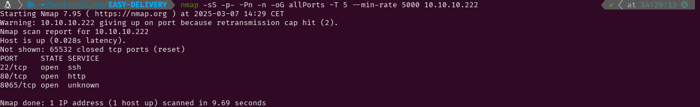

EASY - DELIVERY
1. Recon
Nmap
nmap finds three open ports: SSH (22), HTTP (80) and another unknown service running on port 8065.

The NSE (Nmap Scripting Engine) finds the following information:
- The box is using Debian
- The version of the SSH service is OpenSSH 7.9p1
- The webserver running in port 80 is using nginx 1.14.2
- The titles of the webpages are Welcome (80) and Mattermost (8065)

Website - TCP 80
Visiting the website I see there is a domain (delivery.htb) and a subdomain (helpdesk.delivery.htb) so I add them both to /etc/hosts. Inside the “contact us” section there is a message explaining that unregistered users have to get an email address by contacting the helpdesk team in order to access the Mattermost server (port 8065).


Accessing the helpdesk page I find I can open a new ticket, check the status of a ticket or sign in as I am a guest user. I will start by creating a new ticket and see if I can get an email address to access the Mattermost server. After creating the ticket, a message is displayed. This message says that I can modify information by mailing 7759464@delivery.htb.


The first page I saw said that I could use a @delivery.htb address to access the Mattermost server, and this address created for my ticket is a @delivery.htb address, so I will try creating an account in Mattermost with it. After creating the account I have to check my inbox to verify it, but I do not have access to an inbox. However, as this account is made to edit the information of an existing ticket, checking the status of that ticket will probably show how to verify the new Mattermost account.


As I imagined, I can see the message sent to that account from the ticket status, so now I can verify the account and log in to Mattermost.


2. Gaining Access
After logging into the new account and joining the exisiting team (Internal), I can see some messages posted by the user root. These messages contain plain text credentials (maildeliverer:Youve_G0t_Mail!) which can be used to log in through SSH to the target. There are also two messages saying that passwords are often reused and that some of them are a variant of PleaseSuscribe!. That password is not in RockYou, but it seems that if I get the hash of a password I will be able to crack it with hashcat rules.


3. Privilege Escalation
Root
Using netstat I can see there is a mysql service running in the server. This database service is probably being used either by the helpdesk service or the Mattermost service. Looking around for configuration files I find /opt/mattermost/config/config.json. This file contains plain text credentials for the mysql service that grant me access to the databases. Inside the Users table I find the usernames and the hashed passwords.


As I read earlier in the Mattermost messages, I should be using hashcat rules to create variations of the PleaseSuscribe! password, so I create a hash.txt file with the hashed password for root, and a pass.txt file with the known password. The hashcat help menu shows how to use a file to apply different rules to each word of a dictionary. The example file in the help menu is best64.rule so I look it up and find this article which recommends using that rule set before trying any others. After downloading it from GitHub, I run hashcat in dictionary attack mode using best64.rule and get the password for root. Now I can read root.txt and submit the flag.